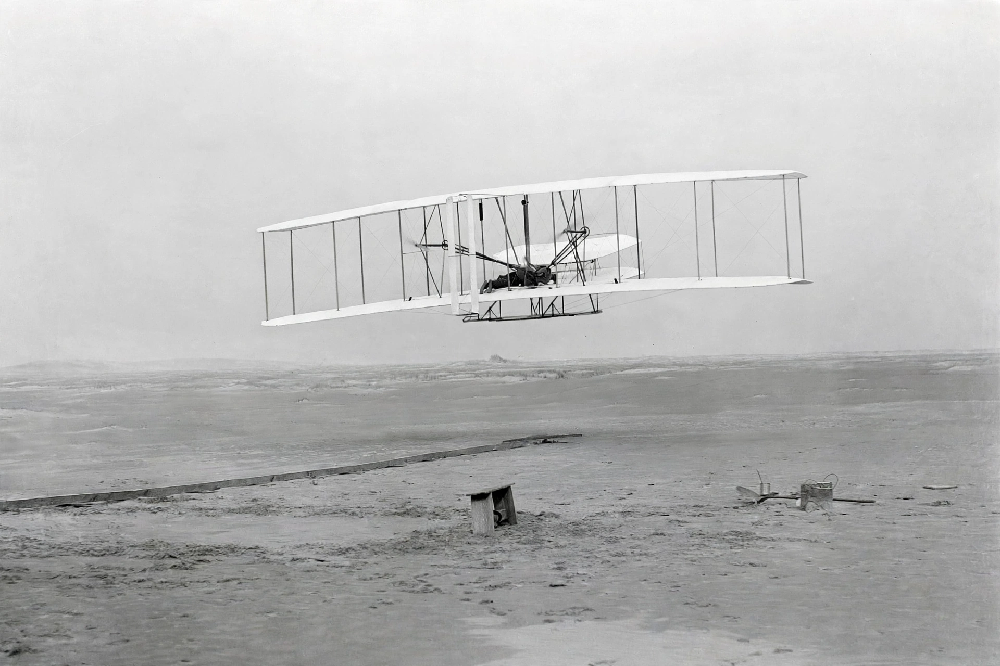

Wright brothers
From Wikipedia, the free encyclopedia

The first powered flight, 17 December 1903.The Wright brothers, Orville (1871–1948) and Wilbur (1867–1912), were American aviation pioneers, bicycle makers from Dayton, Ohio, who achieved the first sustained, controlled, powered heavier-than-air flights on 17 December 1903 at Kitty Hawk, North Carolina. Their key insight was three-axis control — roll, pitch and yaw — which made practical flight possible, and their Flyer design founded the aeroplane industry.
Path to Kitty Hawk
Inspired by Otto Lilienthal\'s gliding experiments and his death in 1896, the brothers built gliders in 1900–1902, testing them at windy Kitty Hawk. Finding published lift data wrong, they built a wind tunnel and tested some 200 wing shapes, then devised wing-warping for roll control.
The first flights
On 17 December 1903, with a 12-horsepower engine built by Charlie Taylor, Orville flew 36.5 metres (120 ft) in 12 seconds; Wilbur\'s fourth flight that day covered 259.7 metres in 59 seconds. Few newspapers reported it, and the brothers quietly perfected the machine in Ohio in 1904–05.
Later years
Public demonstrations in 1908 in America and France made them world-famous. Patent wars with Glenn Curtiss and others consumed Wilbur, who died of typhoid in 1912. Orville sold the company in 1915 and lived to see aviation transform war and travel; the 1903 Flyer now hangs in the Smithsonian in Washington, DC.